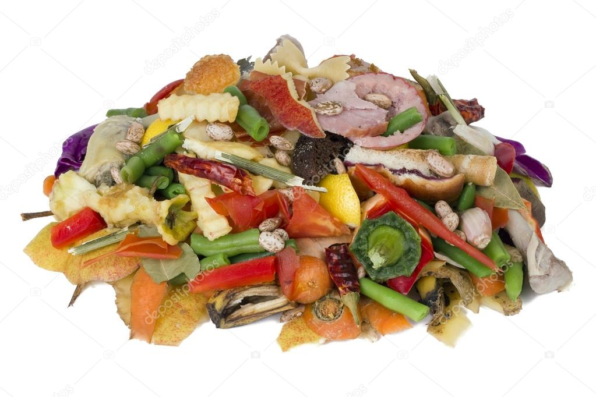

Pile o' Food

Description
Another family recipe that was kept secret for generations, Food Pile night is everyone's favorite night of the week!
This hearty meal contains almost no harmful chemicals, and can be thrown together in a matter of minutes!
Ingredients
- Food! Can you eat it, or think somebody else might? Throw it on!
Preparation
- Start off by putting on your food sack mixing shoes, you'll need these later
- Survey your land for food or food-like items
- Don't forget the leftovers!
- Gather them in a clean sack
- Close the sack and begin mixing and mashing its contents. Beware of any liquids that may leak from the sack and onto your shoes (this is why we put on our food sack mixing shoes in step one) Everybody loves this part!
- Grab sack from the bottom and empty its contents onto the table. Dig in! No utensils needed!